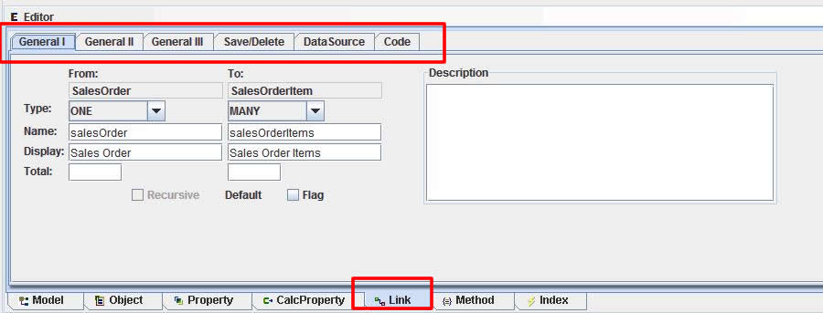

Link Editor
OA and OABuilder supports any type of references between objects, and
advanced features and settings for making complex relationships automatic.
As with all of the editors in OABuilder, the default values are
almost always what is needed, so there is no need to set each
individual setting.
Link information: types, names, etc.

Information describing link.
More information describing link.
Dropdown tree to navigate to correct object.
Options for saving and deleting objects.
DataSource information: fkey name, etc.
Custom code, if different then what is automatically generated.
Many to Many relationship.
Many to Many relationship, showing the database information - link table name, fkeys, etc.
Self-reference relationship, also called recursive link, where an object can have many child objects.